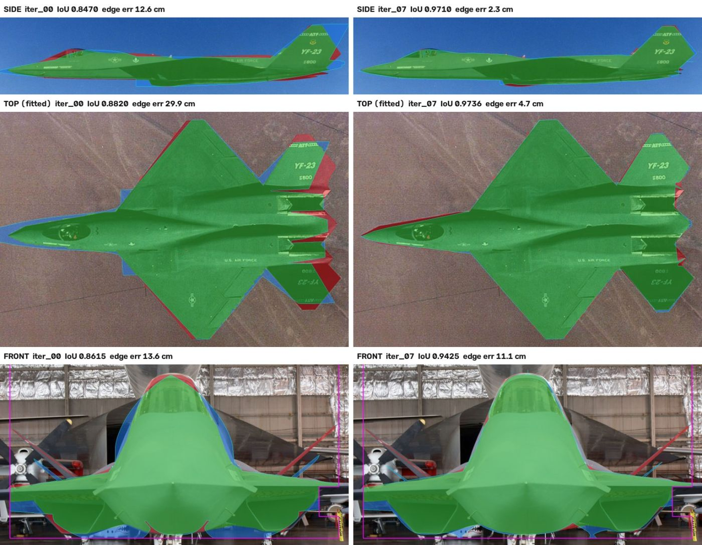
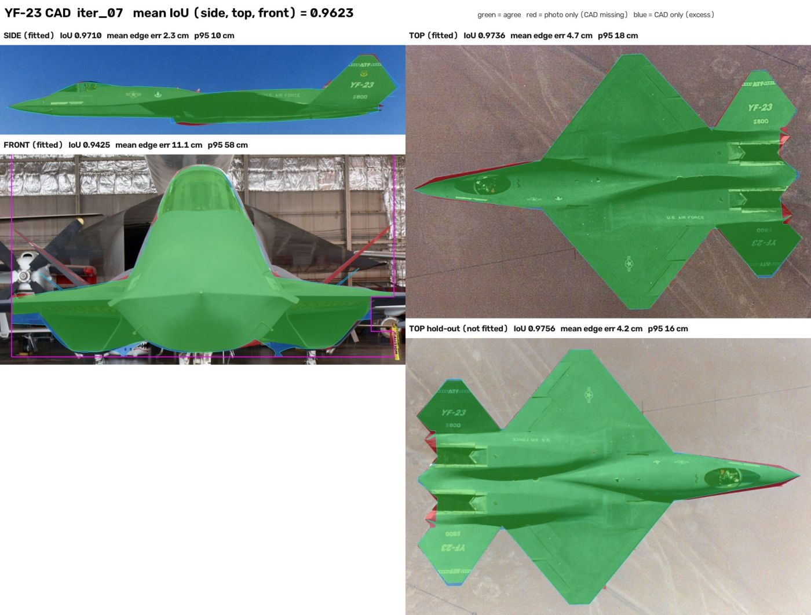
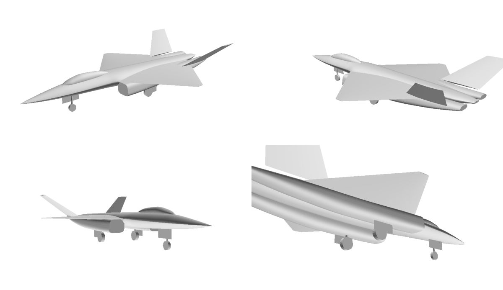
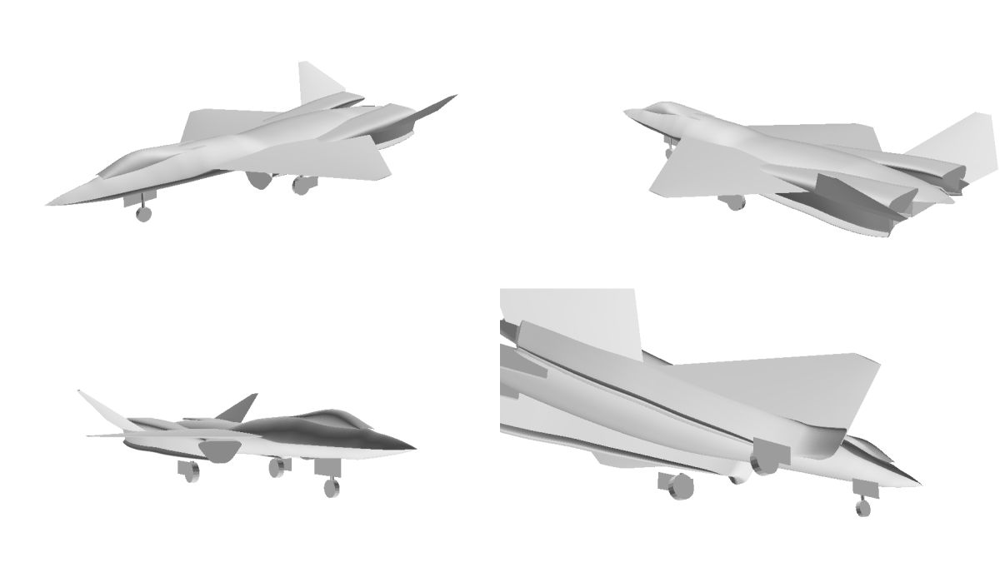

A fresh parametric CAD model of the YF-23, fitted to real photographs so its side, top and front silhouettes match. Each iteration re-registers a camera to every photo, then reshapes the CAD to raise silhouette overlap (IoU). Overall length and span stay locked to published dimensions.
Every iteration scored under one registration protocol. Iterations 08 and 09 gave no further gain, so 07 is the result.
| Iter | Mean | Side | Top | Front | Top hold-out | Edge err side / top / front (cm) |
|---|
Left: iteration 00, built from published dimensions only. Right: iteration 07. Overlays sit on the registered photo.

The full four-view panel for each milestone iteration.

Shaded checks, used to catch optimizer artefacts that silhouettes can't show. Gear down, about 0.36 M triangles.


The parametric search has plateaued. These are the differences still visible at iteration 07, with my read on whether each is geometry or camera.
Real photographs only; no drawings or generated imagery. Both prototypes share an outer mould line; every selected photo is PAV-1.
| View | Photo | Camera | Quality | Licence |
|---|---|---|---|---|
| Side | YF-23 left view · USAF 060810-F-1234S-007 | In flight, port side, telephoto (near-orthographic), gear up | 1800 × 1262; clean sky; automatic mask with canopy hull fill | Public domain |
| Top (fitted) | Yf-23 1 · U.S. Navy | In flight, from above, banked about 7° | 640 × 480, low; automatic mask | Public domain |
| Top (hold-out) | YF-23 top view · USAF 060810-F-1234S-004 | In flight, from above | 1800 × 1435, good; never used for fitting | Public domain |
| Front | NMUSAF head-on · Valder137, 2009 | Ground, gear down, about 16 m perspective | 1200 × 803; cluttered; hand-traced, gear and an occluded patch excluded | CC BY 2.0 |